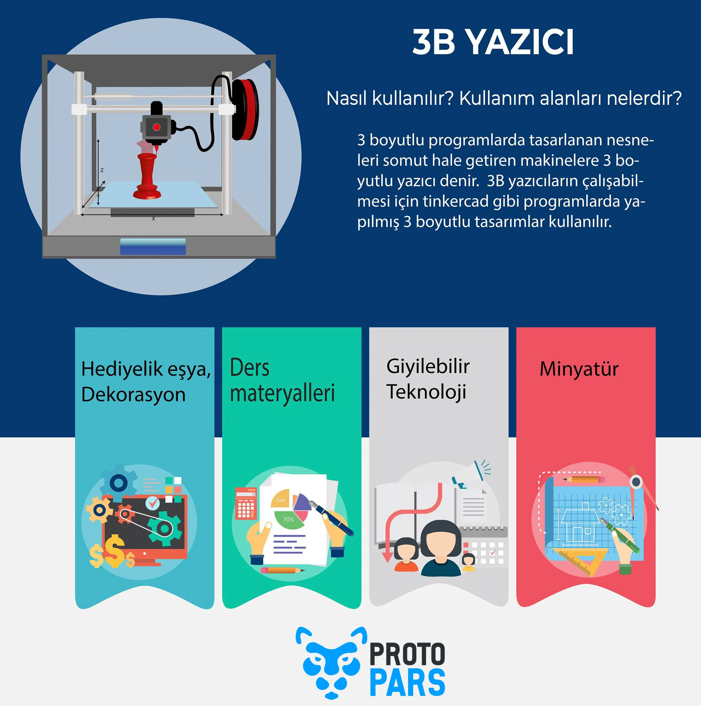

3D Yazıcı Nasıl Çalışır
3D yazıcıların çalışma mantığı, herhangi bir üç boyutlu modelin katmanlama teknolojisi ile plastiği eriterek üstüste yazarak modeli oluşturmasıdır. Basım 3 aşamadan oluşur:Modelleme: Kullanıcı ilk olarak yapmak istediği modeli çizer ya da hazır olarak bulur ve bu modeli STL dosya formatına çevirerek ilk aşamayı başarıyla tamamlar.
3D Baskı: Baskı işleminde obje katmanlar halinde üst üste serilerek oluşturulur. Bu katmanlar plastik eritme, laser sintering, sterolitografi gibi farklı yöntemler ile gerçekleştirilir.
Model Temizleme: Son olarak 3D yazıcı ile oluşturduğumuz objeler hatalar veya destekler içerebilir. Bu durumda son bir yüzey temizleme, iyileştirme veya geliştirme son ölçüye getirme işlemleri uygulanabilir.
